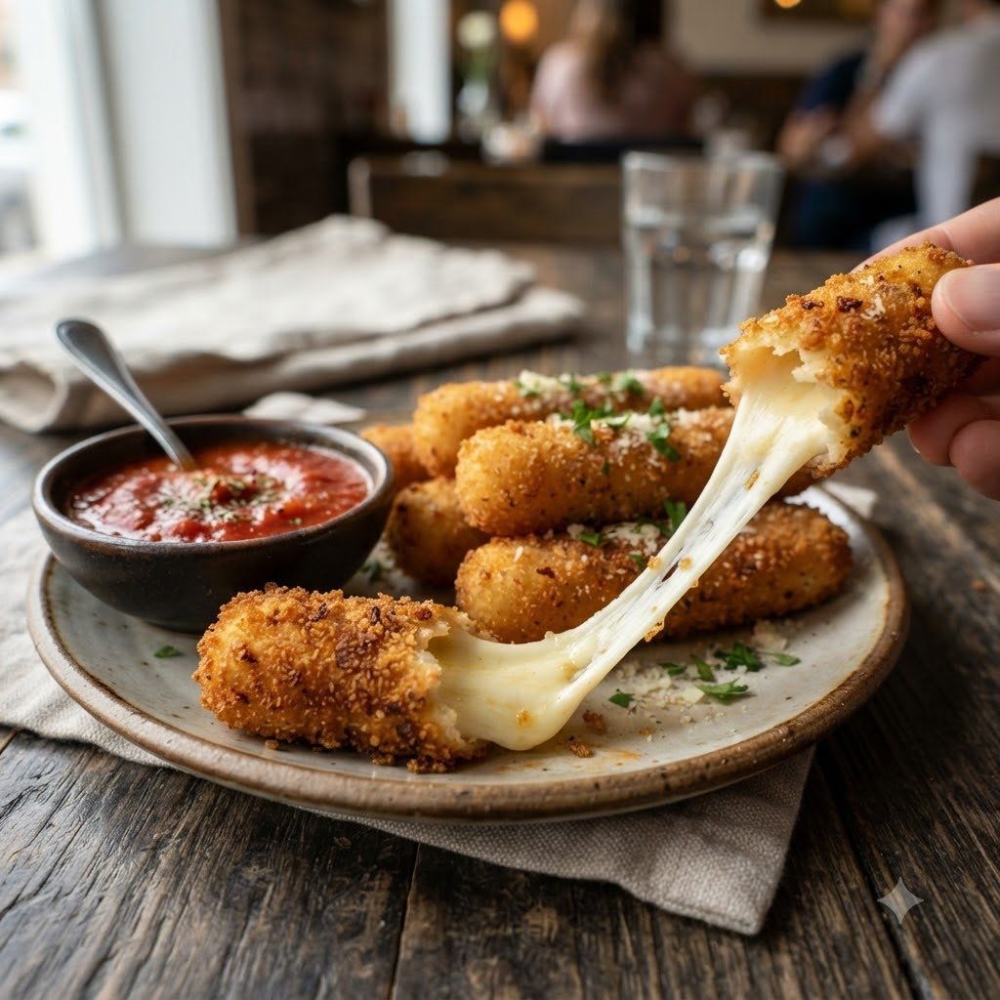

Air Fryer Mozzarella Sticks

Air Fryer Mozzarella Sticks
Airfryer – Fry 190°C 7 min makes ~10
Prep ahead: Freeze the coated cheese sticks for at least 30 minutes before air-frying, or they’ll ooze out.
Ingredients
- 10 mozzarella string cheese sticks, halved
- 1/2 cup flour
- 2 eggs, beaten
- 1 cup breadcrumbs
- 1 tsp Italian seasoning
- Oil spray
Method
1Preheat: Preheat the Airfryer to 190°C for 4 minutes before adding the food to the basket.
2Coat each cheese stick in flour, then egg, then breadcrumbs mixed with Italian seasoning; repeat the egg and breadcrumb layer for a thicker coat.
3Freeze coated sticks for at least 30 minutes.
4Spray with oil and arrange in the basket, spaced apart.
5Air-fry at 190°C for 7 minutes until golden, watching closely so cheese doesn’t burst out.